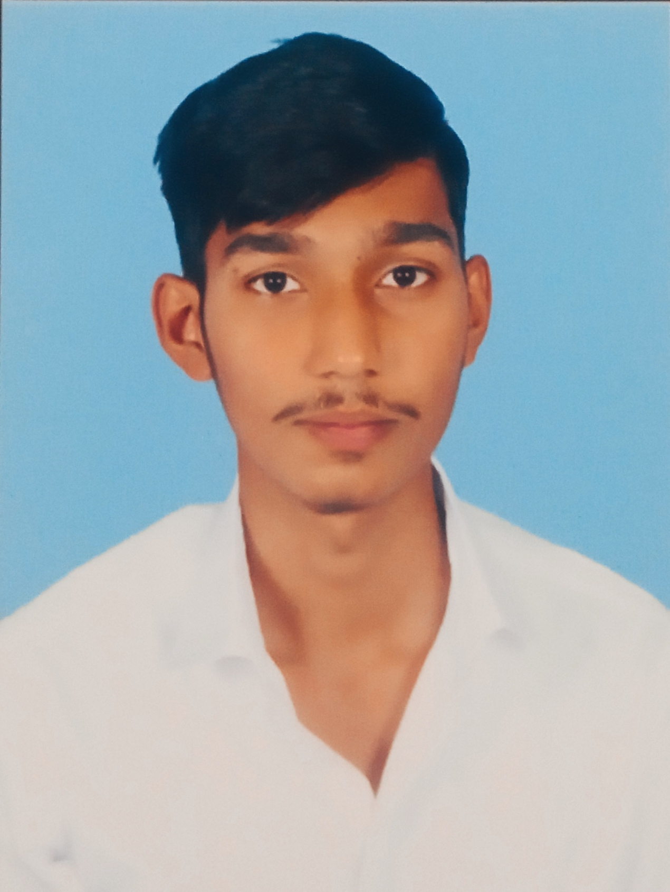

|  | Ambitious software developer seeking a challenging role in an IT company where I can harness my skills, expand knowledge, and drive professional growth. Eager to collaborate with innovative teams, tackle real-world challenges, and develop impactful solutions that make a difference. |
Jan 2020 - Jan 2021
The primary objective of this mini project is to develop a mobile application that allows users to send the notification when there is a trouble.
Developed a database management system to streamline customer reservations and transactions for a car rental company. Utilized PHP, SQL, HTML, JavaScript, and CSS for efficient data handling and user interface design.
Theprimary objective of this mini project is to create a simplified version of the popular popular Carrom game using the Python programming language
Implemented a system to improve network performance by distributing traffic across servers using algorithms such as round-robin, weighted round-robin, and reverse proxy.
Developed and deployed a predictive model for diabetes diagnosis using machine learning techniques.Libraries Python, Pandas, Scikit-learn, Matplotlib, Seaborn, TensorFlow .
c++,c and web development